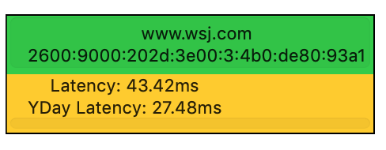
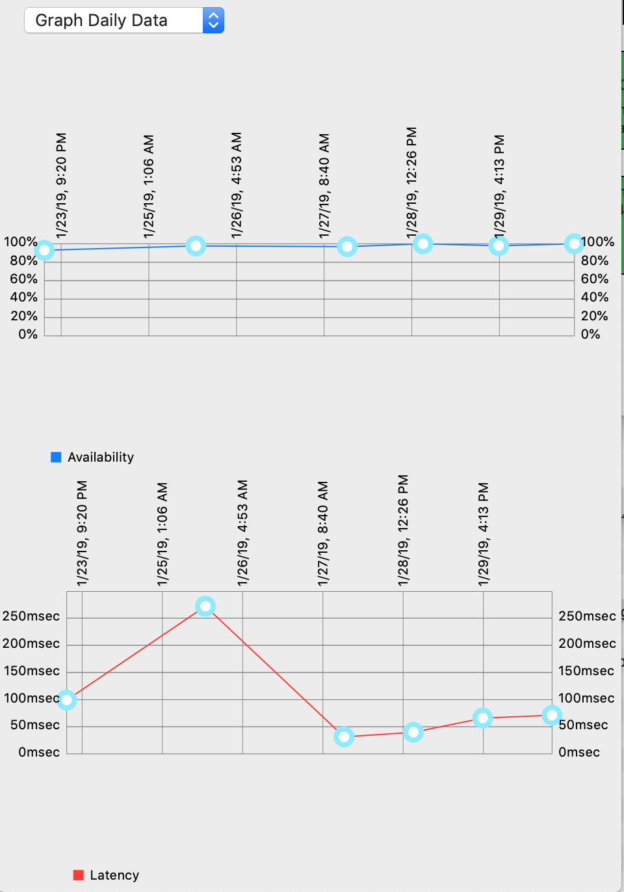
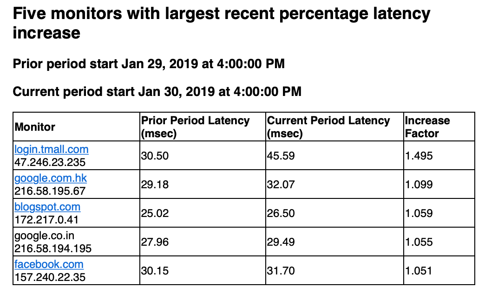

Latency monitor states and thresholds
Every availability monitor includes a latency monitor. The latency monitor has its own colored small rectangle inside the larger availability rectangle. The color of the latency rectangle is based on a comparison of:
The latency of ICMP to that target during the most recently completed 5-minute interval (ignoring the interval currently in progress).
“Yesterday’s average latency” to that target. “yesterday” is based on midnight UTC time. If “yesterday’s latency” is not yet available, the “prior 60 minute latency” may be used.
The color of the latency rectangle is calculated as follows:
Green: Current latency < Yesterday latency * 1.2 + 10msec
Yellow: Current latency < Yesterday latency * 1.5 + 10msec
Orange: Current latency < Yesterday latency * 1.8 + 10msec
Red: Current latency >= Yesterday latency * 1.8 + 10msec

Latency measurements are highly susceptible to load on the monitoring host as well as time-of-day fluctuations due to routine network usage. Latency changes never result in email or audible alerts .
Double-clicking on a monitor will bring up graphs of the historic availability (top) and latency (bottom). This can be useful for troubleshooting performance problems.

The daily email report for a map includes a list of the five monitors with the largest recent percentage latency increase. This can be helpful for WAN engineers to detect when traffic rerouted to a suboptimal path. These comparisons are always based on “UTC days”.

https://networkmom.net feedback@networkmom.net Copyright 2019 Network Mom LLC